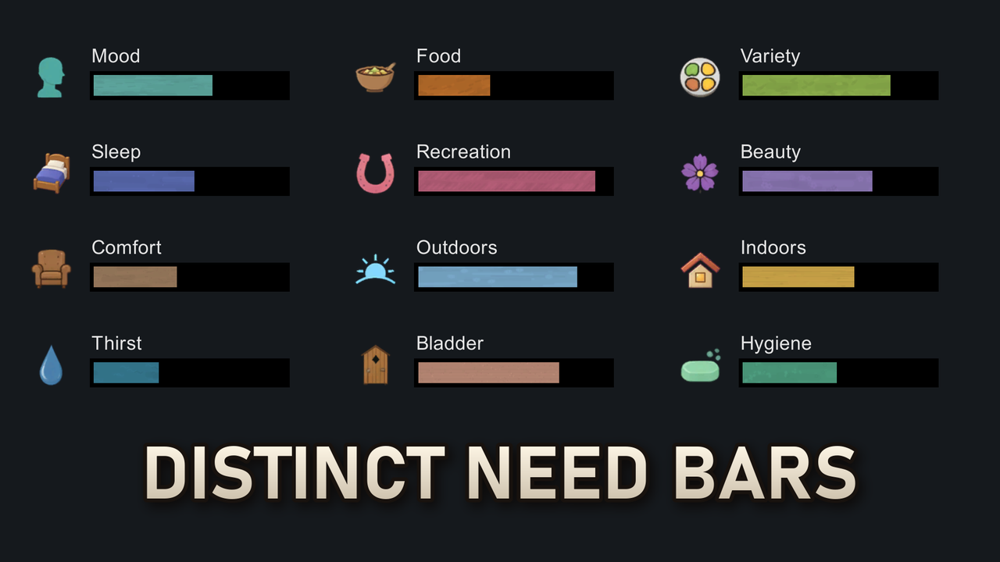
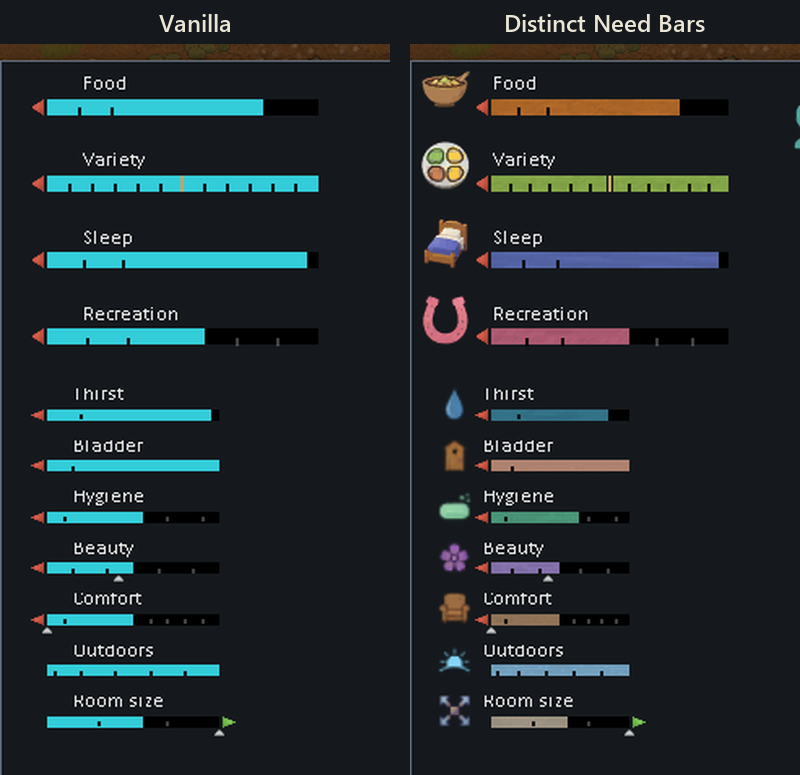
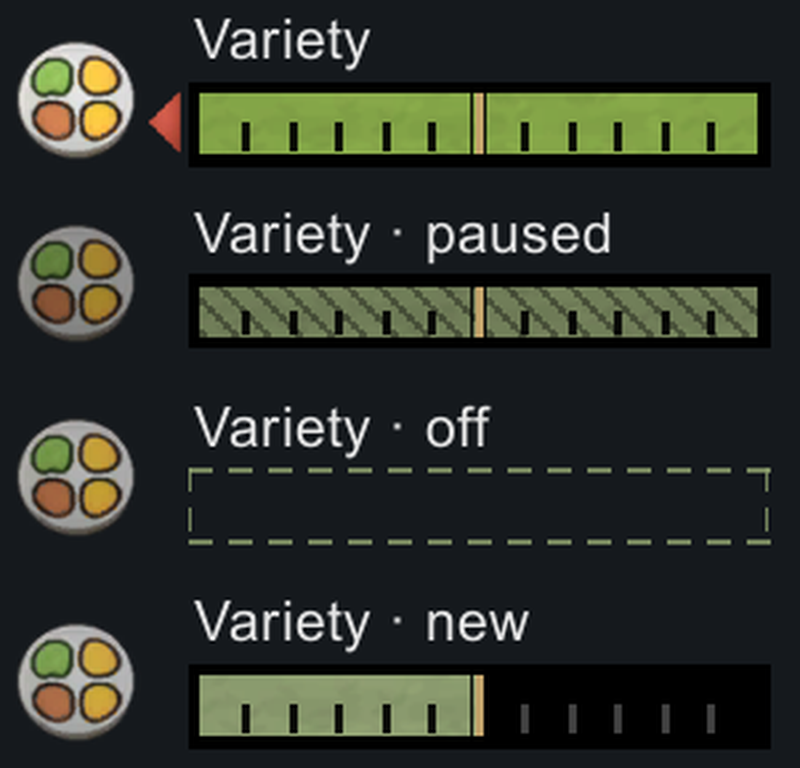
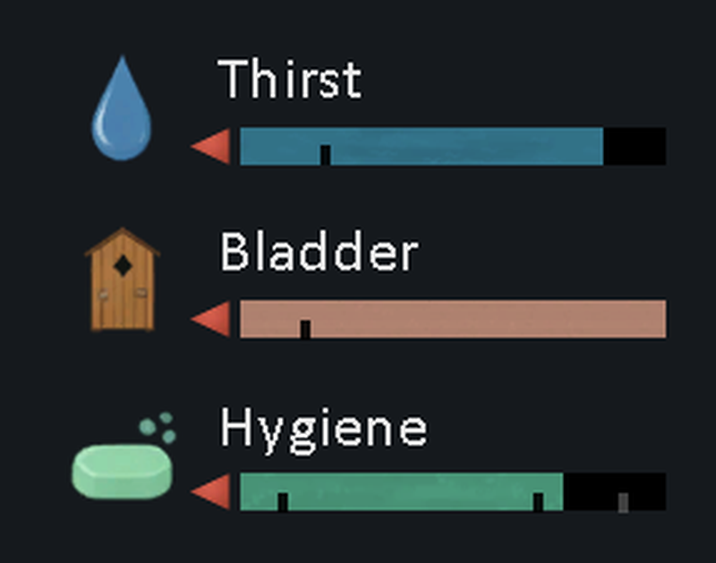

Distinct Need Bars
Draft for review, lane BED-RECAP (2026-11-04): the page recaptured with the bed Sleep icon. Not
published. Images are the local drafts; on Steam the description images load from https://evyatar108.github.io/rimworld-media/dnb/. The preview is
About\Preview.png.

Preview at the Workshop's thumbnail width (230 px):



Ever had to read the labels to tell your colonist's Food bar from their Sleep bar? In vanilla every need is the same cyan bar. Distinct Need Bars gives each one its own colour, texture and icon, so you can see what a colonist is short of at a glance.
Bugs, suggestions and compatibility requests: please use the Discussions threads (Bug Reports, Suggestions, Mod Compatibility Requests) so nothing gets lost in the comments.
What it does
 Every bar looks different. Mood, Food, Sleep, Recreation, Beauty, Comfort, Outdoors, Indoors, Room size and Chemical each get their own colour and a light painted texture.
Every bar looks different. Mood, Food, Sleep, Recreation, Beauty, Comfort, Outdoors, Indoors, Room size and Chemical each get their own colour and a light painted texture.An icon beside each bar. A small painted icon in the bar's colour sits to the left of the bar: a bowl for Food, a bed for Sleep, a horseshoe for Recreation, a flower for Beauty.
Still vanilla's bars. Each bar keeps its label, height, threshold ticks, change arrows and target markers. To make room for the icon, the bars start a little later, so they are about 13% shorter.
Every need gets an icon. A need from another mod that has no design yet gets a slate bar and a plain icon, so every row still lines up.
 Rarer needs and addictions too. Chemical, Indoors and the seven addiction needs (Alcohol, Ambrosia, Go-juice, Luciferium, Psychite, Smokeleaf and Wake-up) get their own colour and icon. Room size never shows on vanilla's Needs tab, so its look is for mods that list it.
Rarer needs and addictions too. Chemical, Indoors and the seven addiction needs (Alcohol, Ambrosia, Go-juice, Luciferium, Psychite, Smokeleaf and Wake-up) get their own colour and icon. Room size never shows on vanilla's Needs tab, so its look is for mods that list it.Variety Matters 2

With Variety Matters 2, its Variety bar is herb green, with a wheat mark at 50% where its mood thought changes from bad to good. Its paused, off and new looks keep their meaning in the new colour. Hover and click still open Variety Matters 2's own windows. Variety Matters 2 is optional, and needs no change of its own.Dubs Bad Hygiene and other mods

Dubs Bad Hygiene. Thirst is well-water blue with a drop, Bladder sandstone with an outhouse door, Hygiene mint with a bar of soap. Other mods. Fifteen needs from ten more mods get their own colour and icon too:
Other mods. Fifteen needs from ten more mods get their own colour and icon too:- Biosphere (LTS): Firesap
- Integrated Genes: Gauranlen, Meditation
- Medieval Overhaul: Hornet honey
- The Heaven Forged Celestial: Human flesh
- Vanilla Brewing Expanded: Caffeine, Tobacco
- Vanilla Factions Expanded - Classical: Opium
- Vanilla Ideology Expanded - Memes and Structures: Anonymity, Corruption, Desserts
- Vanilla Races Expanded - Android: Memory space, Power
- Vanilla Races Expanded - Genie: Antibiotics
- Vanilla Races Expanded - Highmate: Lovin'
DLC needs
 Biotech's needs. Deathrest, Kill satiety, Learning, Play and a mechanoid's Energy each get their own colour and icon on the Needs tab.
Biotech's needs. Deathrest, Kill satiety, Learning, Play and a mechanoid's Energy each get their own colour and icon on the Needs tab.The Hemogen and Deathrest gizmos. A sanguophage's Hemogen gizmo gets a blood-red bar with a drop beside it. The target you drag, the threshold marks and an ability's hemogen cost still show as before. Its Deathrest gizmo gets the Deathrest icon beside its bar.
The slave tab. With Ideology, a slave's Suppression bar on its slave tab gets the same treatment.
Compatibility
- Requires Harmony.
- RimWorld 1.6 and 1.7.
- It only changes how the bars are drawn and saves nothing, so you can add or remove it from a running colony.
- The caravan tab's narrow bars take each need's colour, without the icon.
- Mods that draw their own need bars, such as RimHUD and Numbers, keep their own look.
Feedback
Found a bug? Post it in the Bug Reports thread, with your mod list and log if you can. A need that still shows the plain icon? Tell me which mod it's from in Mod Compatibility Requests.How much AI did you use to make this mod and its images? Yes. The page images are real in-game screenshots.
Links
Description: 6,057 of Steam's 8,000 characters. Gallery order: preview, 01-all-needs.png, 02-before-after.png, 03-needs-tab.png, 04-variety-states.png, 05-dbh-needs.png, 06-other-needs.png, 07-dlc-needs.png, 08-rarer-needs.png.